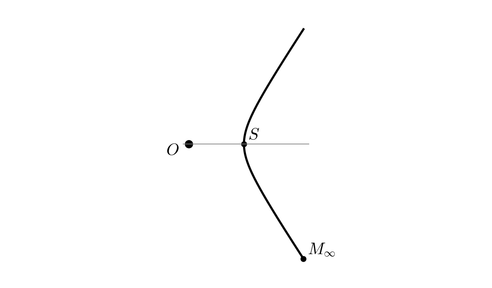
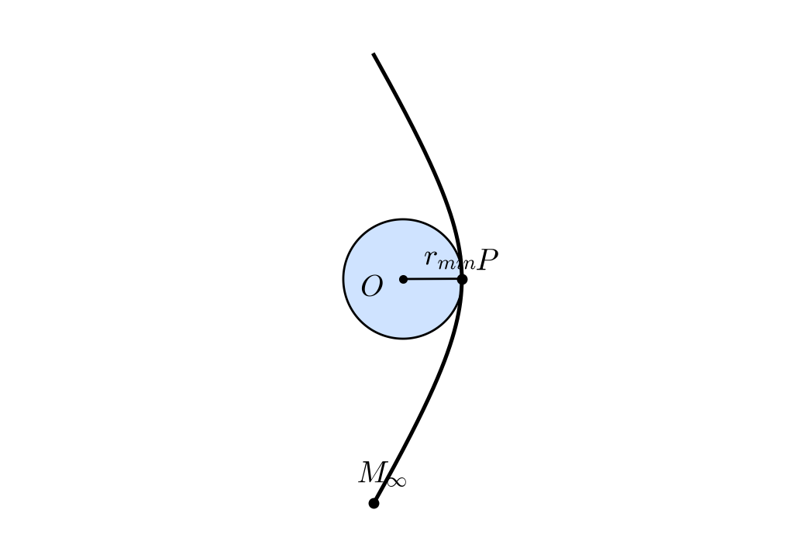

TD8 — Mouvements à force centrale : Yukawa, rappel isotrope, Rutherford, satellites, trou noir, astéroïde
TD8 de D. Courtois (ECAM, P2030, 17/11/2026), à faire après le cours Ch8. Six exercices corrigés par étapes. Pas de corrigé officiel : correction maison, valeurs numériques recalculées. L'énoncé est retapé proprement (version Word / PDF dans « Documents donnés »).
Les outils communs aux six exercices
Exercice 1 — Nucléon dans un potentiel de Yukawa
Nucléon \(M\) de masse \(m\), force centrale dérivant de \(E_p(r)=\dfrac{K}{r}e^{-r/a}\) (\(a>0\)). 1) dimensions de \(a\) et \(K\) ; 2) force, signe de \(K\) ; 3) plan de la trajectoire ; 4) \(C=r^2\dot\theta\) ; 5) \(E_{p\,\mathrm{eff}}\) ; 6) état lié ou de diffusion ; 7) portées \(a=\dfrac{h}{2\pi m_bc}\) ; 8) cas gravitationnel et électromagnétique ; 9) signes de \(K\) et \(K'\).

1) Dimensions de \(a\) et \(K\)
Étape 1 : \(a\).
L'exponentielle \(e^{-r/a}\) a un argument sans dimension, donc \(a\) a la dimension d'une longueur.
Étape 2 : \(K\).
\(K\,e^{-r/a}/r\) est une énergie, donc \(K=E_p\,r\).
2) Force et signe de \(K\)
Étape 1 : on dérive le produit \(K\,r^{-1}e^{-r/a}\).
\[ \frac{dE_p}{dr}=K\left(-\frac{1}{r^2}-\frac{1}{ar}\right)e^{-r/a} \] \[ \vec F=K\,e^{-r/a}\left(\frac{1}{r^2}+\frac{1}{ar}\right)\vec e_r \]Étape 2 : signe. Le facteur entre parenthèses est positif, donc le signe de \(F_r\) est celui de \(K\). Une force attractive est dirigée vers \(O\), soit \(F_r<0\).
3) Plan de la trajectoire
Étape 1 : le théorème du moment cinétique en \(O\).
\[ \frac{d\vec L_O}{dt}=\overrightarrow{OM}\wedge\vec F=r\vec e_r\wedge F\vec e_r=\vec 0 \]Étape 2 : \(\vec L_O=\overrightarrow{OM}\wedge m\vec v\) est constant et orthogonal à \(\overrightarrow{OM}\) à tout instant.
4) Constante \(C=r^2\dot\theta\)
Étape 1 : dans le plan \(Oxy\), avec \(\vec v=\dot r\vec e_r+r\dot\theta\vec e_\theta\), le moment cinétique vaut
\[ \vec L_O=m\,r\vec e_r\wedge(\dot r\vec e_r+r\dot\theta\vec e_\theta)=m\,r^2\dot\theta\,\vec e_z \]Il est constant, donc \(C=r^2\dot\theta\) est constante.
Étape 2 : valeur initiale. À \(t=0\), \(\theta=0\), \(r=r_0\), \(\vec v_0=v_1\vec e_x+v_2\vec e_y\). La composante orthoradiale de \(\vec v_0\) est \(r_0\dot\theta_0=v_2\) (car \(\vec e_\theta=\vec e_y\) pour \(\theta=0\)).
5) Énergie mécanique et \(E_{p\,\mathrm{eff}}\)
Étape 1 : \(E_m=\tfrac12m(\dot r^2+r^2\dot\theta^2)+E_p(r)\). On remplace \(\dot\theta=C/r^2\).
\[ E_m=\tfrac12m\dot r^2+\underbrace{\frac{mC^2}{2r^2}+\frac{K}{r}e^{-r/a}}_{E_{p\,\mathrm{eff}}(r)} \]Étape 2 : conservation. La seule force est conservative (dérive de \(E_p\)), donc \(E_m\) est constante.
6) État lié ou état de diffusion
Étape 1 : lecture du graphe. \(E_{p\,\mathrm{eff}}\) présente un puits de minimum \(E_1<0\) en \(r_1\), puis une barrière de maximum \(E_2>0\) en \(r_2\), puis tend vers \(0^+\) quand \(r\to\infty\).
Étape 2 : condition d'accessibilité \(E_m\ge E_{p\,\mathrm{eff}}(r)\).
- \(E_1\le E_m<0\) : \(r\) reste entre deux rayons d'arrêt, c'est un état lié.
- \(0\le E_m<E_2\) : si \(r_0<r_2\), le nucléon reste piégé dans le puits (état lié) ; si \(r_0>r_2\), il est dans la zone externe (diffusion).
- \(E_m>E_2\) : aucun obstacle, \(r\) peut tendre vers l'infini : diffusion.
7) Portée des quatre interactions
Étape 1 : pion (\(m_b=2{,}4\cdot10^{-28}\) kg).
\[ a=\frac{6{,}6\cdot10^{-34}}{2\pi\times2{,}4\cdot10^{-28}\times3{,}0\cdot10^{8}}\approx1{,}5\cdot10^{-15}\ \mathrm{m} \]Étape 2 : boson \(W^\pm\) (\(m_b=1{,}4\cdot10^{-25}\) kg).
\[ a=\frac{6{,}6\cdot10^{-34}}{2\pi\times1{,}4\cdot10^{-25}\times3{,}0\cdot10^{8}}\approx2{,}5\cdot10^{-18}\ \mathrm{m} \]Étape 3 : photon et graviton, \(m_b=0\), donc \(a\to+\infty\).
8) Interactions gravitationnelle et électromagnétique
Étape 1 : avec \(a\to\infty\), \(e^{-r/a}\to1\) et \(\dfrac{1}{ar}\to0\).
\[ \vec F=K\left(\frac{1}{r^2}+\frac{1}{ar}\right)e^{-r/a}\vec e_r\;\longrightarrow\;\frac{K}{r^2}\vec e_r \]9) Signes de \(K\) et \(K'\) pour un proton dans un noyau
Étape 1 : l'interaction électromagnétique entre deux protons (charges de même signe) est répulsive, donc \(K>0\).
Étape 2 : pour que le noyau soit lié, l'interaction forte doit être attractive, donc \(K'<0\), et elle doit l'emporter sur la répulsion coulombienne à courte distance.
Exercice 2 — Force de rappel isotrope
\(M\) de masse \(m\), force centrale dérivant de \(E_p(r)=\tfrac12kr^2\) (\(k>0\)). Conditions initiales : \(x(0)=a>0\), \(y(0)=z(0)=0\), \(\dot x(0)=\dot z(0)=0\), \(\dot y(0)=v_0>0\).
1) Force \(\vec F\)
Étape 1 : \(\vec F=-\dfrac{dE_p}{dr}\vec e_r=-kr\,\vec e_r\).
2) Moment cinétique et plan du mouvement
Étape 1 : \(\dfrac{d\vec L_O}{dt}=\overrightarrow{OM}\wedge\vec F=-k\,\overrightarrow{OM}\wedge\overrightarrow{OM}=\vec0\).
Étape 2 : valeur à \(t=0\), avec \(\overrightarrow{OM_0}=a\vec e_x\) et \(\vec v_0=v_0\vec e_y\).
\[ \vec L_O=m\,a\vec e_x\wedge v_0\vec e_y=m\,a\,v_0\,\vec e_z \]3) Énergie mécanique
Étape 1 : \(\vec F\) dérive d'une énergie potentielle, donc \(E_M\) se conserve. On la calcule à \(t=0\) (\(r=a\), \(v=v_0\)).
4) \(r^2\dot\theta\) et équation en \(r\)
Étape 1 : \(L_O=mr^2\dot\theta=mav_0\), donc \(r^2\dot\theta=a\,v_0\).
Étape 2 : on reporte \(\dot\theta=\dfrac{av_0}{r^2}\) dans \(E_M\).
\[ \tfrac12m\dot r^2+\frac{m\,a^2v_0^2}{2r^2}+\tfrac12kr^2=\tfrac12mv_0^2+\tfrac12ka^2 \]5) Énergie potentielle effective et cercles limites
Étape 1 : \(E_{p\,\mathrm{eff}}(r)=\dfrac{m\,a^2v_0^2}{2r^2}+\tfrac12kr^2\), qui tend vers \(+\infty\) en \(0\) et en \(\infty\), avec un minimum : le mouvement est borné.
Étape 2 : rayons d'arrêt, \(\dot r=0\), soit \(E_{p\,\mathrm{eff}}(r)=E_M\). On multiplie par \(2r^2\) :
\[ k\,r^4-(mv_0^2+ka^2)\,r^2+m\,a^2v_0^2=0 \]Étape 3 : factorisation. On vérifie que \((kr^2-mv_0^2)(r^2-a^2)\) redonne ce polynôme : \(kr^4-ka^2r^2-mv_0^2r^2+mv_0^2a^2\). Les racines sont
\[ r^2=a^2\qquad\text{et}\qquad r^2=\frac{m\,v_0^2}{k} \]6) Équations horaires et nature de la trajectoire
Étape 1 : PFD, \(m\ddot{\overrightarrow{OM}}=-k\,\overrightarrow{OM}\). On pose \(\omega=\sqrt{k/m}\).
\[ \ddot{\overrightarrow{OM}}+\omega^2\overrightarrow{OM}=\vec0 \]Étape 2 : solution vectorielle \(\overrightarrow{OM}=\vec A\cos\omega t+\vec B\sin\omega t\). Conditions initiales : \(\vec A=\overrightarrow{OM_0}=a\vec e_x\) et \(\omega\vec B=\vec v_0=v_0\vec e_y\).
Étape 3 : nature. \(\dfrac{x^2}{a^2}+\dfrac{y^2}{(v_0/\omega)^2}=1\).
Exercice 3 — Expérience de Rutherford
Particule alpha (masse \(m\), charge \(2e\)) venant de l'infini avec la vitesse \(-v_0\vec e_x\), de paramètre d'impact \(b\), sur un noyau fixe en \(O\) de numéro atomique \(Z\). Trajectoire : branche d'hyperbole. Donnée : \(\tan\dfrac D2=\dfrac{K}{mbv_0^2}\) ; \(\varepsilon_0=8{,}9\cdot10^{-12}\), \(e=1{,}6\cdot10^{-19}\) C, \(m=6{,}6\cdot10^{-27}\) kg, \(v_0=2{,}0\cdot10^{7}\) m·s\(^{-1}\), \(Z=79\).

1) Force et énergie potentielle
Étape 1 : \(q_1=2e\) et \(q_2=Ze\).
\[ \vec F=\frac{K}{r^2}\vec e_r\quad\text{avec}\quad K=\frac{2Ze^2}{4\pi\varepsilon_0}>0 \]Étape 2 : \(E_p=-\displaystyle\int F\,dr\) avec \(E_p(\infty)=0\).
2) Énergie mécanique
Étape 1 : force conservative, donc \(E_m\) constante. Évaluation à l'infini : \(E_p=0\), \(v=v_0\).
3) Moment cinétique
Étape 1 : force centrale, donc \(\vec L_O\) est constant. Il vaut \(\vec L_O=mr^2\dot\theta\,\vec e_z\).
Étape 2 : valeur initiale. À l'infini, la vitesse est \(v_0\) parallèle à l'axe \(Ox\), et la distance de \(O\) à cette droite est \(b\) : \(\|\overrightarrow{OM}\wedge m\vec v\|=m\,v_0\,b\).
4) \(E_p^*(r)\)
Étape 1 : \(E_m=\tfrac12m\dot r^2+\tfrac12mr^2\dot\theta^2+\dfrac Kr\), avec \(\dot\theta=\dfrac{v_0b}{r^2}\).
5) Distance minimale d'approche
Étape 1 : en \(S\), \(\dot r=0\), donc \(E_m=E_p^*(r_{min})\).
\[ \tfrac12mv_0^2=\frac{mv_0^2b^2}{2r_{min}^2}+\frac{K}{r_{min}} \]Étape 2 : on multiplie par \(\dfrac{2r_{min}^2}{mv_0^2}\) pour obtenir une équation du second degré.
\[ r_{min}^2-\frac{2K}{mv_0^2}\,r_{min}-b^2=0 \]Étape 3 : on garde la racine positive (\(\Delta'=\left(\frac{K}{mv_0^2}\right)^2+b^2\)).
6) Applications numériques
Étape 1 : la constante \(K\).
\[ K=\frac{2\times79\times(1{,}6\cdot10^{-19})^2}{4\pi\times8{,}9\cdot10^{-12}}\approx3{,}6\cdot10^{-26}\ \mathrm{J\cdot m} \]Étape 2 : \(\dfrac{K}{mv_0^2}\), avec \(mv_0^2=6{,}6\cdot10^{-27}\times(2{,}0\cdot10^{7})^2=2{,}64\cdot10^{-12}\) J.
\[ \frac{K}{mv_0^2}\approx1{,}37\cdot10^{-14}\ \mathrm{m} \]Étape 3 : \(D=60^\circ\). \(b=\dfrac{K}{mv_0^2\tan30^\circ}\).
\[ b=\frac{1{,}37\cdot10^{-14}}{0{,}577}\approx2{,}4\cdot10^{-14}\ \mathrm m,\qquad r_{min}=1{,}37\cdot10^{-14}+\sqrt{(1{,}37\cdot10^{-14})^2+(2{,}37\cdot10^{-14})^2}\approx4{,}1\cdot10^{-14}\ \mathrm m \]Étape 4 : \(D=180^\circ\). \(\tan90^\circ\to\infty\), donc \(b=0\) : choc frontal. Alors \(r_{min}=\dfrac{2K}{mv_0^2}\).
\[ r_{min}\approx2{,}7\cdot10^{-14}\ \mathrm m \]Exercice 4 — Satellite circulaire
Satellite de masse \(m\) sur une orbite circulaire de rayon \(r=R+h\). \(G=6{,}67\cdot10^{-11}\) SI, \(M=6{,}0\cdot10^{24}\) kg, \(R=6370\) km.
1) Vitesse
Étape 1 : PFD avec \(\vec F=-\dfrac{GMm}{r^2}\vec e_r\) et \(r=\mathrm{cte}\).
\[ -mr\dot\theta^2=-\frac{GMm}{r^2}\quad(\text{sur }\vec e_r),\qquad mr\ddot\theta=0\quad(\text{sur }\vec e_\theta) \]Étape 2 : \(\ddot\theta=0\), donc \(\dot\theta\) et \(v=r\dot\theta\) sont constants. Sur \(\vec e_r\), \(\dfrac{v^2}{r}=\dfrac{GM}{r^2}\).
2) Période et troisième loi de Kepler
Étape 1 : \(T=\dfrac{2\pi r}{v}=2\pi r\sqrt{\dfrac{r}{GM}}\).
\[ \frac{T^2}{r^3}=\frac{4\pi^2}{GM} \]3) Énergies
Étape 1 : \(E_c=\tfrac12mv^2=\dfrac{GMm}{2r}\).
Étape 2 : \(E_p=-\dfrac{GMm}{r}\), donc \(E_m=E_c+E_p=-\dfrac{GMm}{2r}\).
4) Satellite géostationnaire
Étape 1 : immobile par rapport à la Terre, il tourne dans le plan équatorial avec la période de rotation de la Terre, le jour sidéral \(T=86\,164\) s (≈ 24 h).
Étape 2 : on inverse la 3ᵉ loi.
\[ r=\left(\frac{GMT^2}{4\pi^2}\right)^{1/3}=\left(\frac{6{,}67\cdot10^{-11}\times6{,}0\cdot10^{24}\times86164^2}{4\pi^2}\right)^{1/3}\approx4{,}22\cdot10^{7}\ \mathrm m \]5) Lancement
Étape 1 : a) avant le lancement, le satellite est immobile sur Terre à la latitude \(\lambda\) : il tourne à \(\Omega=\dfrac{2\pi}{T}\) sur un cercle de rayon \(R\cos\lambda\). Sa vitesse est \(\Omega R\cos\lambda\).
Étape 2 : b) la fusée fournit \(W=E_{m,f}-E_{m,i}\) (théorème de l'énergie mécanique), avec \(E_{m,f}=-\dfrac{GMm}{2r}\).
Étape 3 : c) \(h\ll R\), donc \(W(\lambda)\approx\dfrac{GMm}{2R}-\tfrac12m\Omega^2R^2\cos^2\lambda\). Par kilogramme : \(\dfrac{GM}{2R}=3{,}14\cdot10^{7}\) J·kg\(^{-1}\) et \(\tfrac12\Omega^2R^2=1{,}08\cdot10^{5}\) J·kg\(^{-1}\).
\[ W(0^\circ)\approx3{,}130\cdot10^{7},\qquad W(55^\circ)\approx3{,}138\cdot10^{7}\ \mathrm{J\cdot kg^{-1}} \] \[ \frac{W(55^\circ)-W(0^\circ)}{W(55^\circ)}\approx0{,}23\ \% \]Exercice 5 — Trou noir
Point \(P\) de masse \(m\) près d'un astre sphérique de centre \(O\), de masse \(M\) et de rayon \(R\), dans le référentiel astrocentrique supposé galiléen.
1) Force, énergie potentielle, énergie mécanique
Étape 1 : loi de gravitation de Newton.
\[ \vec F=-\frac{GMm}{r^2}\vec e_r,\qquad E_p(r)=-\frac{GMm}{r}\ (E_p(\infty)=0),\qquad E_m=\tfrac12mv^2-\frac{GMm}{r} \]2) Mouvement plan et \(C=r^2\dot\theta\)
Étape 1 : \(\vec F\) centrale donc \(\dfrac{d\vec L_O}{dt}=\vec0\) : \(\vec L_O\) constant, \(\overrightarrow{OP}\perp\vec L_O\), le mouvement est plan.
Étape 2 : en polaires, \(\vec L_O=mr^2\dot\theta\vec e_z\) constant.
3) \(E_{p\,\mathrm{eff}}\)
Étape 1 : \(v^2=\dot r^2+r^2\dot\theta^2=\dot r^2+\dfrac{C^2}{r^2}\).
4) Courbe et états de diffusion
Étape 1 : allure. \(E_{p\,\mathrm{eff}}\to+\infty\) quand \(r\to0\) (terme en \(1/r^2\) dominant), puis passe par un minimum négatif en \(r=\dfrac{C^2}{GM}\) (valeur \(-\dfrac{G^2M^2m}{2C^2}\)), puis tend vers \(0^-\) quand \(r\to\infty\).
Étape 2 : raisonnement graphique. \(P\) ne peut aller qu'aux \(r\) vérifiant \(E_m\ge E_{p\,\mathrm{eff}}\).
- \(E_m<0\) : \(r\) est borné, état lié (ellipse).
- \(E_m\ge0\) : aucune borne supérieure en \(r\), \(P\) peut s'éloigner à l'infini.
5) Vitesse de libération
Étape 1 : on cherche la vitesse minimale en \(r=R\). Le cas le plus favorable est \(E_m=0\).
\[ \tfrac12mv_{lib}^2-\frac{GMm}{R}=0 \]6) Rayon d'un trou noir
Étape 1 : condition \(v_{lib}>c\).
\[ \sqrt{\frac{2GM}{R}}>c\;\Longleftrightarrow\;R<\frac{2GM}{c^2} \]7) Applications numériques
- Soleil (\(M=2{,}0\cdot10^{30}\) kg) : \(R_S=\dfrac{2\times6{,}67\cdot10^{-11}\times2{,}0\cdot10^{30}}{(3{,}0\cdot10^{8})^2}\approx3{,}0\cdot10^{3}\) m, soit environ 3 km.
- Terre (\(M=6{,}0\cdot10^{24}\) kg) : \(R_S\approx9\cdot10^{-3}\) m, soit environ 9 mm.
8) Réserves sur l'emploi de la loi de Newton
- La mécanique de Newton suppose \(v\ll c\) : elle n'est plus valable pour des vitesses de l'ordre de \(c\).
- La lumière n'a pas de masse : l'énergie cinétique \(\tfrac12mv^2\) n'a pas de sens pour un photon ; il faut la relativité (restreinte et générale).
- La gravitation est un effet de courbure de l'espace-temps (relativité générale) ; la loi en \(1/r^2\) n'est qu'une approximation des champs faibles.
- Le résultat \(R_S=2GM/c^2\) coïncide avec celui de la relativité générale, par chance et non par rigueur.
Exercice 6 — Alerte à l'astéroïde
Astéroïde de masse \(m\), très loin de la Terre avec la vitesse \(\vec v_0\) et le paramètre d'impact \(b\). Il est dévié selon une hyperbole ; le périgée \(P\) est le point le plus proche. \(v_0=2{,}0\) km·s\(^{-1}\), \(b=140\,000\) km.

1) Grandeurs conservées et équations
Étape 1 : la gravitation est une force centrale conservative, donc le moment cinétique \(\vec L_O\) et l'énergie mécanique \(E_m\) se conservent.
Étape 2 : en \(M_\infty\), la vitesse est \(v_0\), la distance à la droite support est \(b\) et \(E_p=0\). En \(P\), la vitesse \(\vec v_P\) est orthoradiale (perpendiculaire à \(\overrightarrow{OP}\)) car \(\dot r=0\).
\[ mbv_0=m\,r_{min}\,v_P \quad(\text{moment cinétique}) \] \[ \tfrac12mv_0^2=\tfrac12mv_P^2-\frac{GMm}{r_{min}}\quad(\text{énergie mécanique}) \]2) Distance minimale d'approche
Étape 1 : on tire \(v_P=\dfrac{bv_0}{r_{min}}\) de la première équation et on le reporte dans la seconde.
\[ \tfrac12v_0^2=\frac{b^2v_0^2}{2r_{min}^2}-\frac{GM}{r_{min}} \]Étape 2 : on multiplie par \(\dfrac{2r_{min}^2}{v_0^2}\).
\[ r_{min}^2+\frac{2GM}{v_0^2}\,r_{min}-b^2=0 \]Étape 3 : racine positive.
3) L'astéroïde s'écrase-t-il ?
Étape 1 : \(\dfrac{GM}{v_0^2}=\dfrac{6{,}67\cdot10^{-11}\times6{,}0\cdot10^{24}}{(2{,}0\cdot10^{3})^2}\approx1{,}0\cdot10^{8}\) m.
Étape 2 : \(b=1{,}4\cdot10^{8}\) m.
\[ r_{min}=-1{,}0\cdot10^{8}+\sqrt{(1{,}0\cdot10^{8})^2+(1{,}4\cdot10^{8})^2}\approx7{,}2\cdot10^{7}\ \mathrm m \]📂 Documents donnés
Énoncé du TD8, retapé proprement (même mise en page) : version PDF et version Word modifiable.
TD8 — D. Courtois (ECAM, P2030, 17/11/2026)
Cursus AM2 · Physique · Les figures de l'énoncé sont redessinées (schémas). Les corrections ci-dessus sont maison. Voir aussi Ch8 — Mouvement à force centrale et Ch7 — Moment cinétique.